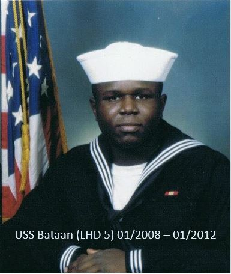

Hi everyone, Welcome to my page. All information is only for assignment and testing purpose. I have had some fun growing up in Nigeria with divorced parents. Some of my challenge started from when my parents seperated at a tender age. At this time, I was in high school when my parents seperated. 
I had a touch childhood or simply a rough one, however, I was sent to the boarding school for my high school for six years. I also learned quite a lot during my high school days. Although, I must say it was fun for me.
In addition, I had two siblings. They both stayed at my mother's house during my days in high school. They always ensured that I had good friends in school.
As an adult, I made lots of life's decisions during my adulthood, most of which was done during my school days while enrolled in high school. I had to get a girl friend just to keep me busy and always trying to stay out of trouble. I loved all my family members and also my sibling.
Eventually, my dad and step mom won the Visa lottery, and they moved to the United States in 2004. Back in September of same year, I also travelled to the US in order to be with them while I was in College. But one of the great mistakes I made was coming back to Nigeria to finish my school.
After my trip, I was determined to finish travel back to the US. Immediately after my schooling, I purchased an air ticket and travelled to the US. This was the beginning of my lifetime in the United States - May 2007. Check out other pages.